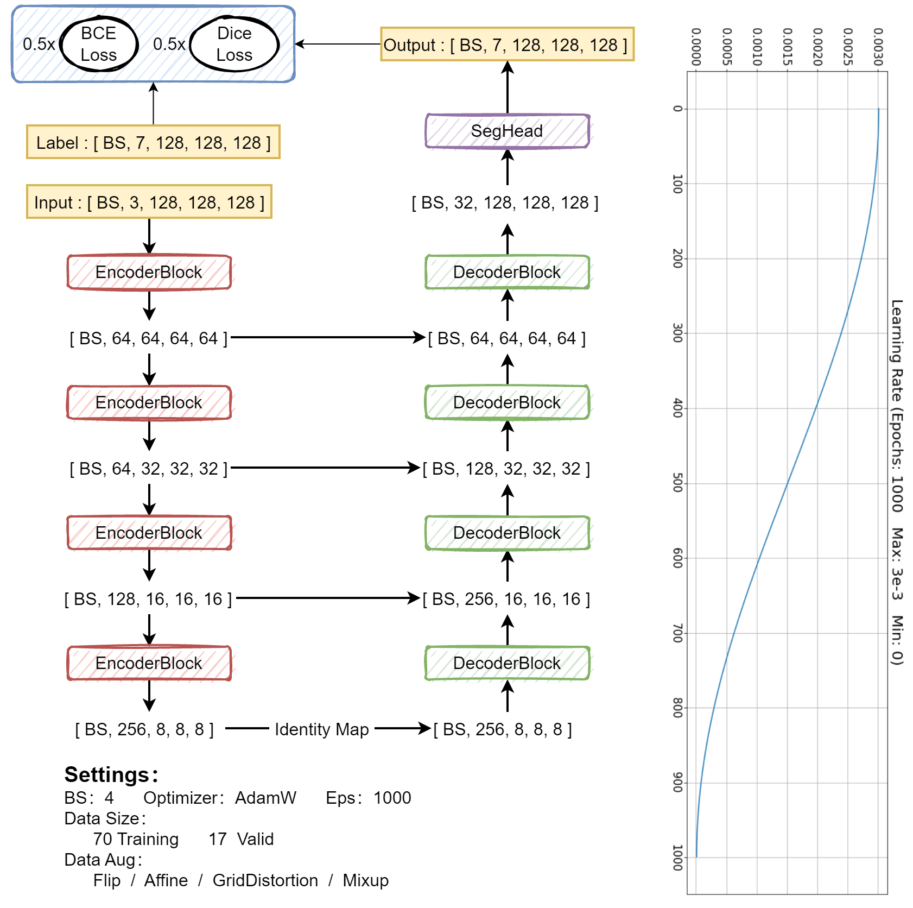
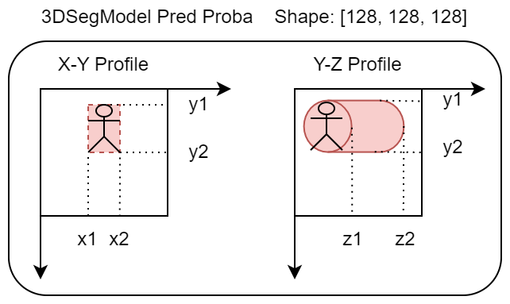
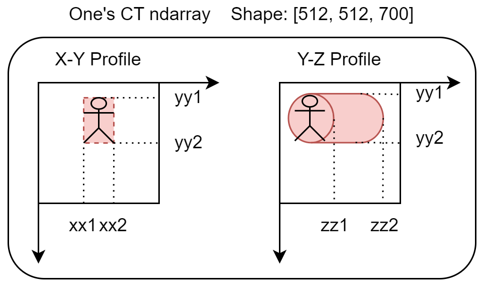
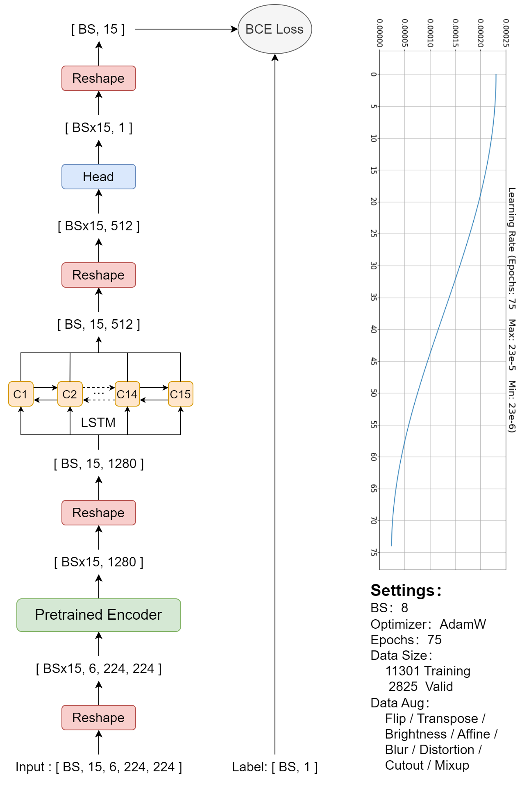
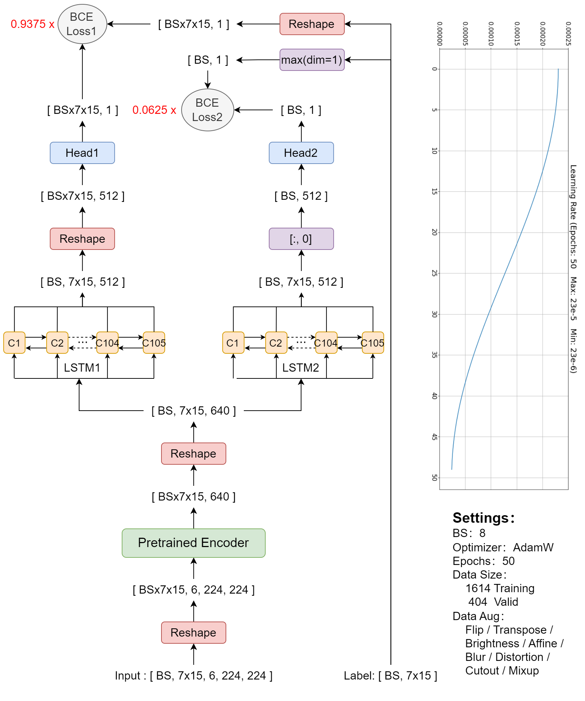

部分数据可视化
示例数据来源于编号为 1.2.826.0.1.3680043.10001 的患者，内附 7 张 gif 动图，分别对应患者的 7 节颈椎骨。每张动图都是依据三维语义分割模型对于 Ci 颈椎骨的分割结果，从该节颈椎骨的 CT 图像中采样的 15x5 张切片，这些切片可以表征该节颈椎骨。
三维语义分割模型

输入
假设某患者共有 700（num_CT）张CT图像，使用 np.quantile(list(range(num_CT)), np.linspace(0, 1, 128)).round().astype(int) 方法，可以从该患者的 700（num_CT）张 CT 图像中均匀选取 128 张读取，并将其 resize 至【128, 128】，然后将这些图像在最后一维拼接得到【128, 128, 128】的数组，最后在第 0 维扩充维度和归一化，得到【3, 128, 128, 128】的输入数据，该数组可以表征这 700（num_CT）张 CT 图像。
标签
构造【7, 512, 512, num_CT】的空数组 mask 储存标签，之后读取该患者尺寸【512, 512, num_CT】的 .nii 文件为 mask_org，并对 mask_org 进行方向上的调整，然后使用 for cid in range(7): mask[cid] = (mask_org == (cid+1)) 方法得到 3D 语义分割的标签数组 mask（数组中只有 0 和 1），数组元素 mask[i]==1 的区域就是第 i 节颈椎骨在【512, 512, num_CT】数组中的所处位置。最后将该 mask 数组从【7, 512, 512, num_CT】resize 至【7, 128, 128, 128】得到最终的标签。
使用
以提取 C1 颈椎骨为例。
使用三维语义分割模型预测得到该患者【7, 128, 128, 128】的预测概率张量 msk，因为是提取 C1，所以只看 msk 的第 0 维度，令 msk0=msk[0]。取概率阈值 thre=0.2（若概率阈值 0.2 提取不出来元素，则将阈值降低为 0.05），计算 msk0>thre 的区域其最小包围长方体在尺寸【128, 128, 128】msk 中的三轴范围坐标 x1, x2, y1, y2, z1, z2（如下图所示）。比方 z1=24，z2=40（0≤z1<z2≤128），因为其处于【128, 128, 128】的坐标系下，要想知道 z1=24 时对应于患者的哪张 CT 图像，还得进行一个变换，zz1 = int(z1 / 128 * num_CT) = 131，zz2 = int(z2 / 128 * num_CT) = 218（0≤zz1<zz2≤num_CT=700）。这表明在患者的 700 张 CT 图像中，C1 颈椎骨的位置横跨第 131 张CT图像和第 218 张 CT 图像。xx1、xx2、yy1、yy2 采用同样的公式计算得到。

图中的小人表示颈椎骨

图中的小人表示颈椎骨
现在我们可以知道 C1 颈椎骨在预测概率张量 msk0 的 [:, :, z1:z2] 处，同时也在 700（num_CT）张 CT 图像的第 zz1 和 第 zz2 张之间。接下来我们需要提取出该颈椎骨的像素信息。
使用 np.linspace(zz1, zz2-1, 15).astype(int) 方法从患者 C1 颈椎骨的 zz2-zz1=87 张 CT 中，均匀地选取 15 张 CT：
对于 15 张 CT 中的每一张，都额外选取该图像前后各 2 张CT图像一起堆叠，相当于在每个位置处都提取了【512, 512, 5】的 CT 数据 data，然后将每个 data 数组归一化之后乘 255，再作 data = data[xx1:xx2, yy1:yy2]，相当于去除像素信息中最小包围长方体以外的图像，最后将 data resize 至【224, 224, 5】。
使用 np.linspace(z1, z2-1, 15).astype(int) 方法从患者 C1 颈椎骨的概率预测张量 msk0 中均匀地选取 15 个切片：
每个切片都是【128, 128】的张量 msk0_this，再作 msk0_this = msk0_this[x1:x2, y1:y2]，从颈椎骨的剖面中去除最小包围长方体以外的语义分割图像， 最后将 msk0_this resize至【224, 224】。
将每个位置的 data 和 msk0_this 拼接，得到【224, 224, 6】的张量，因此 C1 颈椎骨 15 个位置处的张量可以按顺序堆叠为【15, 224, 224, 6】，通道变换得到【15, 6, 224, 224】的张量。
单颈椎骨分类模型

输入
每个患者的每节颈椎骨都可以作为一个单独的样本。构建样本时，将表征该节颈椎骨的 15 张【6, 224, 224】图像进行独立的数据增强，然后堆叠。堆叠时，会有 80% 概率将 15 张【6, 224, 224】图像按顺序堆叠，也有 20% 的概率会将 15 张【6, 224, 224】图像打乱顺序堆叠，得到【15, 6, 224, 224】的输入张量。
标签
该患者的该节颈椎骨骨折与否（0 / 1）。
全颈椎骨分类模型

输入
将每个患者作为一个样本。构建样本时，将表征该患者的 105=7x15 张【6, 224, 224】图像进行独立的数据增强，然后堆叠。堆叠时，会有 80% 概率将这 105 张【6, 224, 224】图像按颈椎骨的先后顺序堆叠，也有 20% 概率将这 105 张【6, 224, 224】图像打乱顺序堆叠，得到【105, 6, 224, 224】的输入张量。
标签
表征该患者的 105=7x15 张【6, 224, 224】图像所对应的颈椎骨骨折与否。